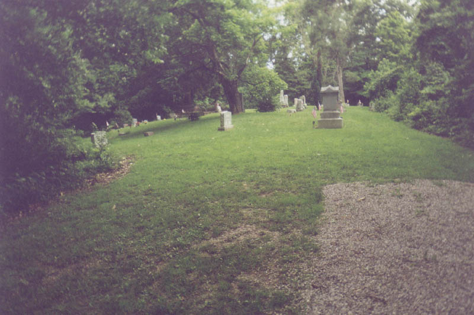
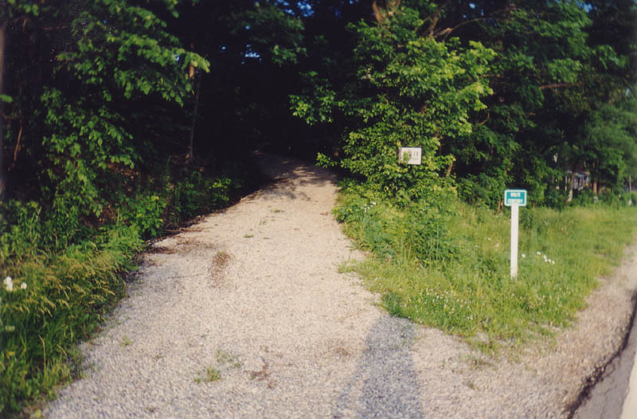
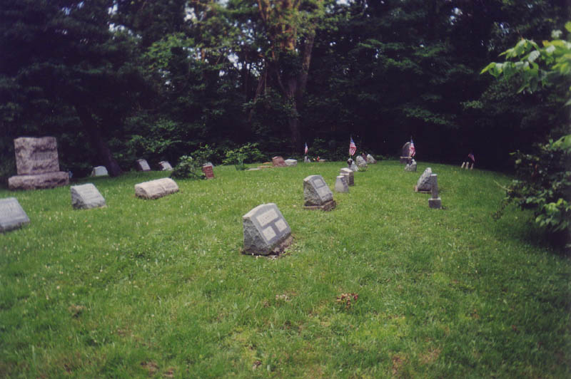
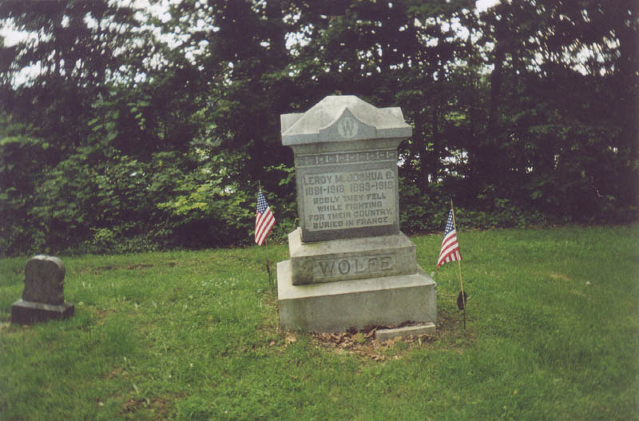
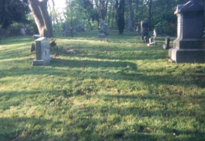
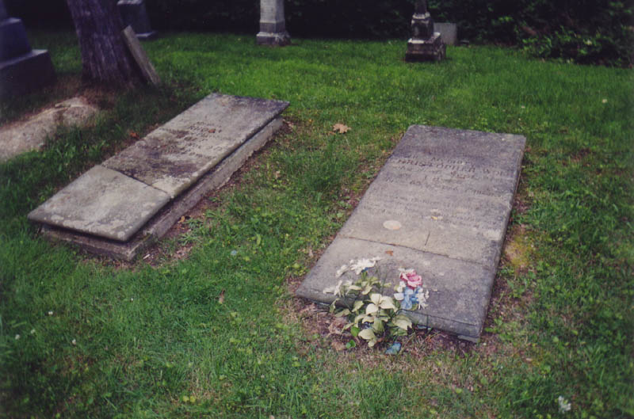
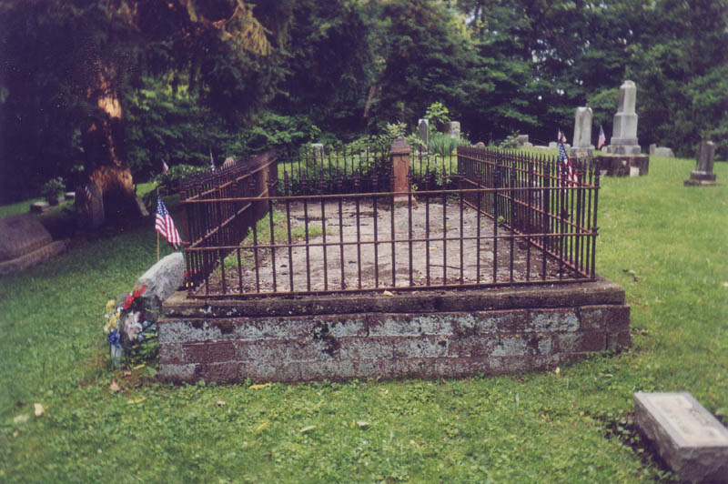

This small cemetery fills a diminutive clearing at the top of a hill in Haydenville, the Hocking County village most famous as "Ohio's last company town." Haydenville once existed solely as housing for employees of the local brick furnace, and the vast majority of the structures in town are built from the same brick they manufactured. Wolfe Cemetery can be found at the end of a driveway that runs off Haydenville Road just outside the corporation limits. It's marked by two small, easy-to-miss signs, one old and the other a green reflectorized ODOT-type sign. This is further out on Haydenville Road than Haydenville Cemetery, the village graveyard, which has ghost stories of its own and guards the open end of the Haydenville Tunnel.

Although technically a family cemetery, there are more non-Wolfes here than Wolfes. They are all related to the Wolfes, however, through marriage. The one exception, Wilson Patrick, was a hired hand for the Wolfe family who spent nearly his entire life with them.

Lots of veterans here, as well. Below you can see the grave of two of the Wolfe boys who died in World War I. As the inscription says, their bodies are buried in France.

And some interesting inscriptions, including those of the patriarch of the Wolfe clan and his wife. Christopher Wolf (the "e" was added later, somehow) moved to Athens in the late 1700s with his wife, Rhoda Dorr Wolf. In 1837 he moved to Hocking County and built a sawmill. He owned several thousand acres around the present site of the cemetery. He died on September 21, 1845, aged 65 years 7 months, and his inscription is as follows:
Farewell my children and friends so dear,
I am not dead but sleeping here,
waiting in hopes of that blissful day,
when I shall arise and leave my bed of clay.
Currently Mr. Wolf has not fulfilled his deathbed promise to rise from the grave. His wife preceded him into the new family plot (she was the first burial there) on May 9, 1845, at the age of 61 years 9 months. Her inscription even features a misspelling at the end:
Friends nor physician could not save,
Her mortal body from the grave,
Nor can the grave confine her here,
When Christ doth call she must appere [sic].
At least one murder victim is buried here: Joseph D. Wolf, son of founding couple Christopher and Rhoda, who was killed by someone when he took a flatboat down the Hocking to the Ohio River to sell. His grave marker gives his date of death as 8/10/1858, age 36 years 1 month 3 days.

Wolfe Cemetery would be a pretty ordinary country graveyard if it weren't for the scary stories that center around it. They say that a witch or a warlock was put to death here and buried beneath a flat stone--flat to keep him or her in the ground where he/she belongs. If you touch the stone, which is supposed to have a large crack in it, it will be warm to the touch. If you stand on it, the witch's hands will seize you and pull you down.

There are several flat stones here. Some were obviously thin upright stones that snapped off their base long ago, while others are just designed to lay flush with the ground. But it's pretty clear that the grave the legend refers to is the huge, raised flat stone with the low metal fence around it.

Several Wolfes are buried around and beneath this stone, which is a sort of group marker. I'd be very surprised if any of them were a witch or a warlock, but who knows? The stone was no warmer than any of the others when I felt it, and I wasn't pulled into the underworld, unfortunately. Stop by Wolfe Cemetery sometime and see if your luck is any different.

Haydenville Cemetery
The Haydenville Tunnel
Grave Addiction: Wolfe Cemetery
Listing of Wolfe Cemetery, Haydenville County, Ohio
Rootsweb: Wolfe Cemetery
Wolfe Family Cemetery Records
Back
forgottenohio@yahoo.com